기본정보
- 출시 : IOS 기준 2011.11.17
- 제작 : Mojang Studio
- 장르 : 샌드박스, 서바이벌
- 등급 : 전체 이용가
- 가격 : 플레이스토어 기준 3000₩
- 플랫폼 : Android, IOS
- 시스템 요구 사항 ▽
Android 4.2 이상 / 용량 75MB 이상
IOS 8 이상 / 용량 75MB 이상
게임플레이
블록으로 이루어진 세상
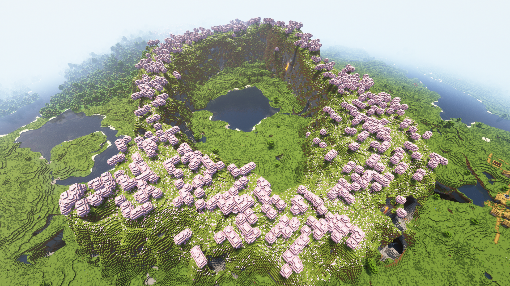
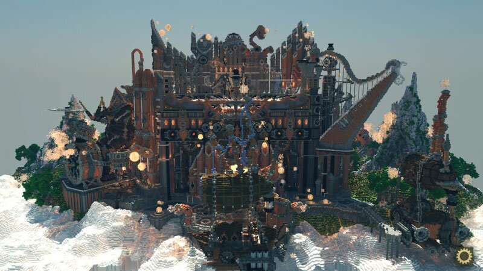
마인크래프트 세상은 블록으로 이루어져있습니다. 이를 기반으로 플레이어는 블록을 파괴하거나 설치를 하며 구조물이나 건축물을 창작할 수 있습니다.
다양한 생물군계
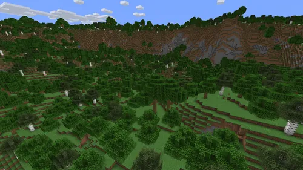
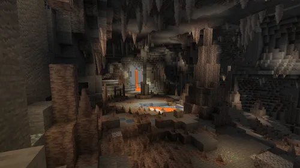
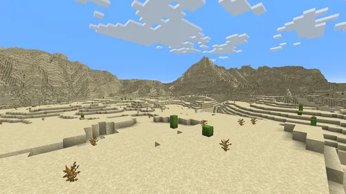
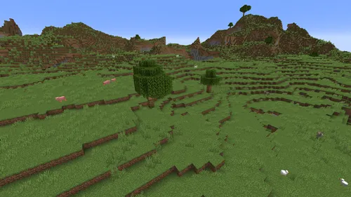
마인크래프트 세상은 산맥, 사막, 동굴 등 다양한 지형을 가지고있습니다.각 생물군계는 고유한 동식물과 자원을 가지고 있어, 플레이어는 다양한 환경에서의 생존과 탐험을 즐길 수 있습니다.
멀티플레이
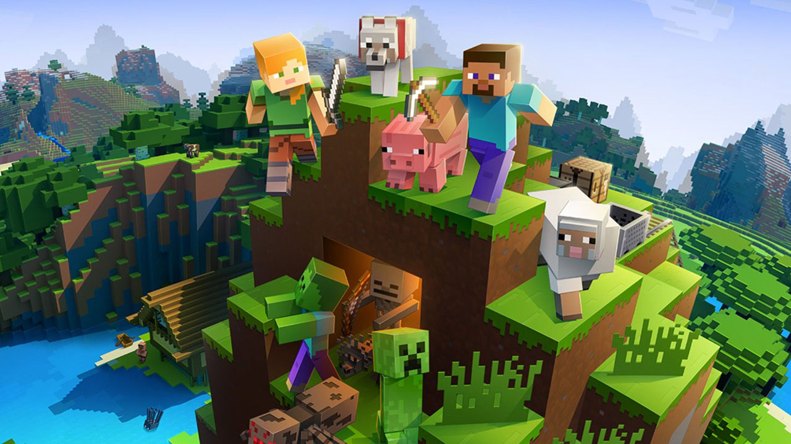
이렇게 많은 컨텐츠들을 혼자만 하는것이 아닌 친구들과 함께 할 수 있도록 멀티플레이 모드를 지원합니다. 적게는 2명부터 많게는 전 세계 몇천명이 되는 사람들끼리 함께 마인크래프트 세계를 즐길 수 있습니다.
특징 및 장단점
유저들이 직접 만드는 게임
마인크래프트는 모드 기능을 지원합니다. 모드는 기본적인 게임에서 새로운 요소를 추가해주는 것으로, 마인크래프트의 대표적인 요소중 하나입니다.
전세계에 모드 제작자들이 제작한 수천가지의 모드들이 있으며, 이 모드들은 게임의 최적화를 돕거나, 플레이어에게 무궁무진한 새로운 경험을 제공합니다.
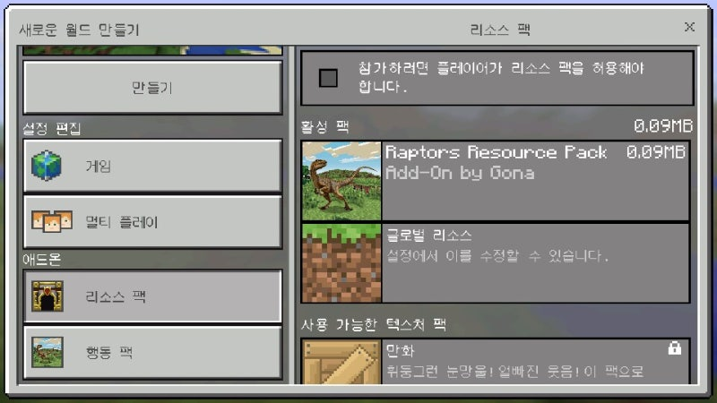
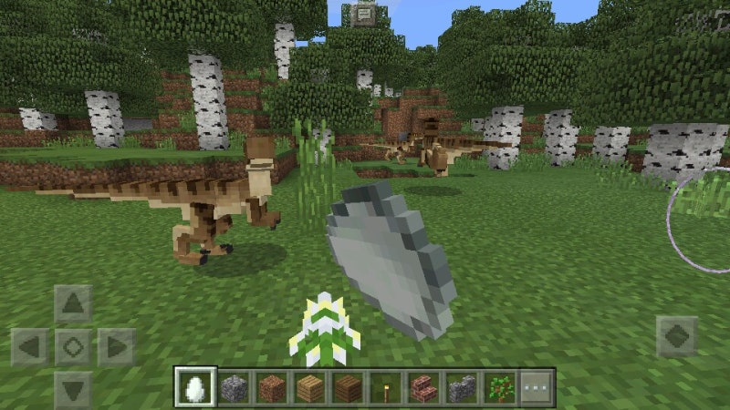
PC버전에서 뿐만이 아닌 모바일 버전에서도 "애드온" 이라는 이름의 기능으로 마인크래프트에 새로운 요소들을 적용할 수 있습니다.
아이템 "레드스톤"을 이용한 회로구성
마인크래프트는 "레드스톤" 아이템을 사용해서 회로 구성이 가능합니다.
이 아이템을 사용해서 전등 스위치나 자동문같은 간단한 기계장치부터 시작해서
심지어는 마인크래프트에서 작동하는 컴퓨터를 만드는 등 매우 복잡한 장치까지 가능합니다.
레드스톤 회로를 이용한 자동문
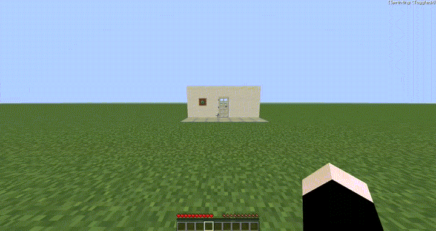
레드스톤 회로를 이용한 전등 스위치
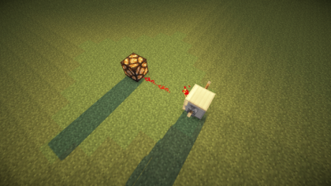
레드스톤 논리 게이트
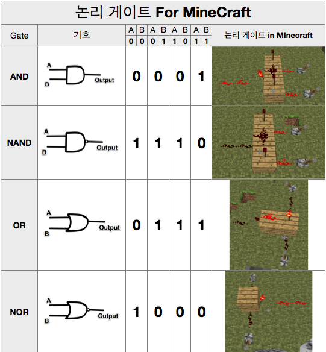
레드스톤을 활용해서 AND, OR 등 논리 회로를 구상할 수 있습니다.이러한 특성을 이용해서
위에서 언급했던 것 처럼 회로를 사용해서 마인크래프트 세상 안에서 작동하는 컴퓨터까지 만들 수 있습니다.
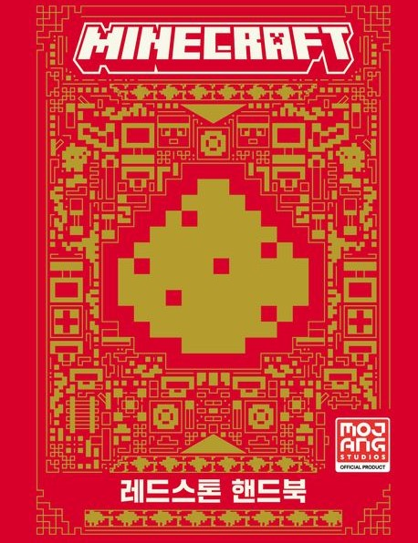
레드스톤에 관련해서는 마인크래프트의 제작사 Mojang이
정식으로 출간한 가이드북이 있을 정도로 간단한 전등 스위치부터,
복잡한 컴퓨터를 만드는 것 까지 다양한 활용이 가능합니다.
유저들과 함께 즐기는 게임 "서버"
마인크래프트의 멀티 플레이기능은 플레이어들이 함께 게임을 즐길 수 있는 중요한 요소입니다. 몇명의 친구들끼리 마인크래프트 세상을 탐험할 수 있고,
다수의 사람들끼리 게임 안에서 함께 교류하거나 경쟁을 하는 등, 다양한 유형의 장르를 생산해낼 수 있습니다.
서바이벌 서버
플레이어들은 기본 서바이벌 모드의 규칙을 기반으로 제작가가 추가로 정한 규칙에 따라 자원을 모으고, 건축하며, 다른 유저와 협력하기도 합니다.
종종 경제 시스템이 포함되어 자원을 채집하거나 농사를 통해서 재화를 모으고 플레이어 간 거래 시스템이 포함되기도 합니다.
대표적인 서바이벌 서버 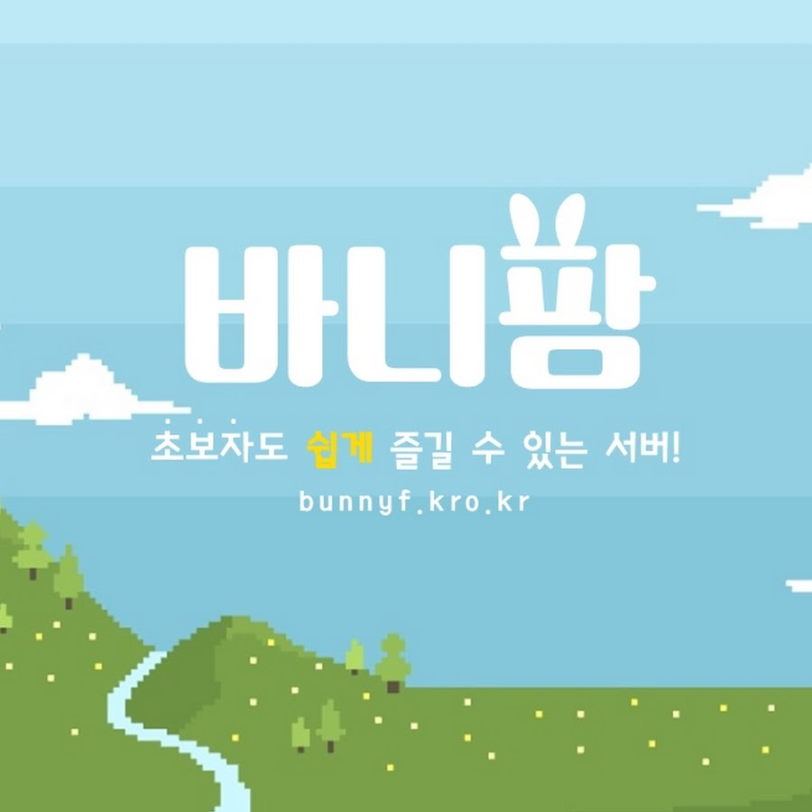
미니게임 서버
다양한 미니게임을 제공하는 서버입니다. 대표적인 미니게임 장르로는 Bed Wars, Sky Wars, TNT Tag 게임이 있습니다.
Bed Wars(침대전쟁)

각각 유저가 스폰하는 지역에 침대가 설치되어있습니다. 플레이어들이 자원을 모으고 서로 PVP를 하며.
체력이 다 닳았을 경우 설치되어있는 침대에서 다시 태어나게 됩니다
하지만 이 침대가 파괴되었을 경우 다시 태어나지 못하고 탈락합니다.
Sky Wars
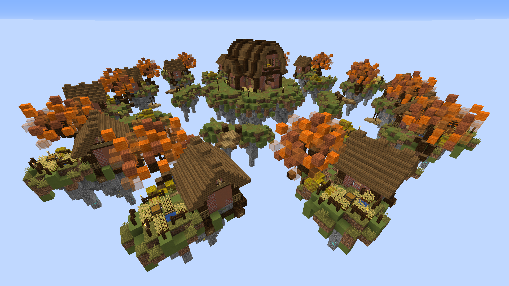
게임이 시작되면 플레이어들은 싸움에 필요한 장비를 갖추고
서로 PVP를 합니다. 체력이 다 닳면 탈락하게 되며, 최후의 1인이 되어야합니다.
'Bed War'와 유사하나 체력이 다 닳게되었을 경우 다시 태어나지 않고
게임에서 바로 탈락하게 됩니다.
TNT Tag
폭탄 돌리기 게임입니다. 술래가 일반인을 타격하면
TNT가 타격한 대상에게 옮겨지게 되고, 제한 시간이 지나면
TNT를 들고있었던플레이어는 탈락하게 됩니다.
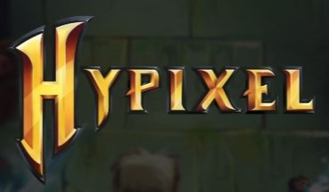 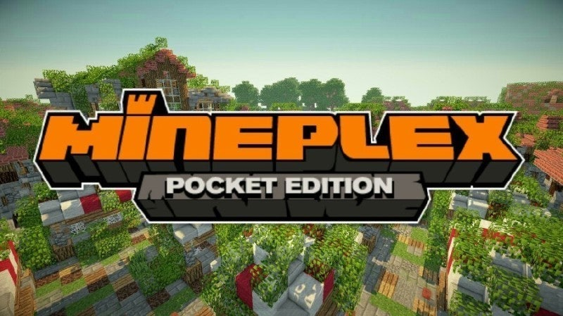
대표적인 미니게임 서버
어떤 영향 tmi
코로나 팬데믹, 온라인에서의 만남
2020년 초, 전 세계를 강타한 코로나 팬데믹. 이로인해 감염의 확산을 막고자 비대면으로 근무를 하거나 원격 교육을 하는 등 집에 머무르는 시간이 많아졌다.
이에 정부는 어린이날을 맞아 "코로나19로 집에서 시간을 보내는 어린이들을 위해 마스크를 벗고 친구들의 웃는 얼굴을 보며
뛰어 놀 수 있는 아주 특별한 청와대!"
라는 슬로건을 걸고 마인크래프트 세계에 가상의 청와대를 구현하여 선보였다.
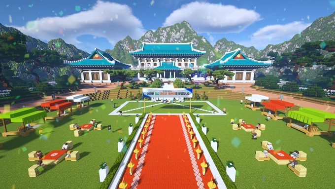
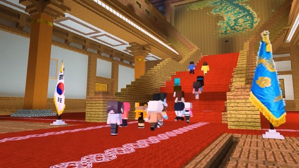
해당 이벤트는 디지털 엔터테인먼트 계열사 "SANDBOX"의 콜라보로 만들어졌다. 영상 뿐만이 아닌 실제 게임 안에서 청와대 건물을 구현한 맵을 배포했다.